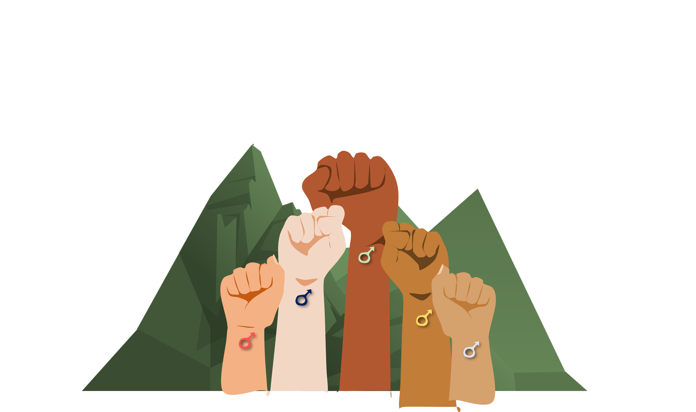
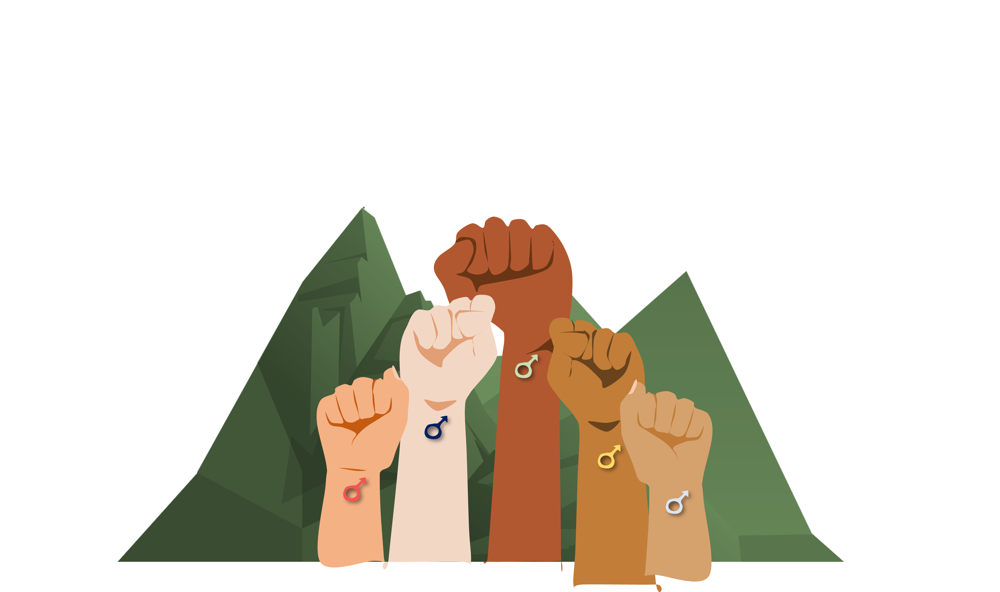
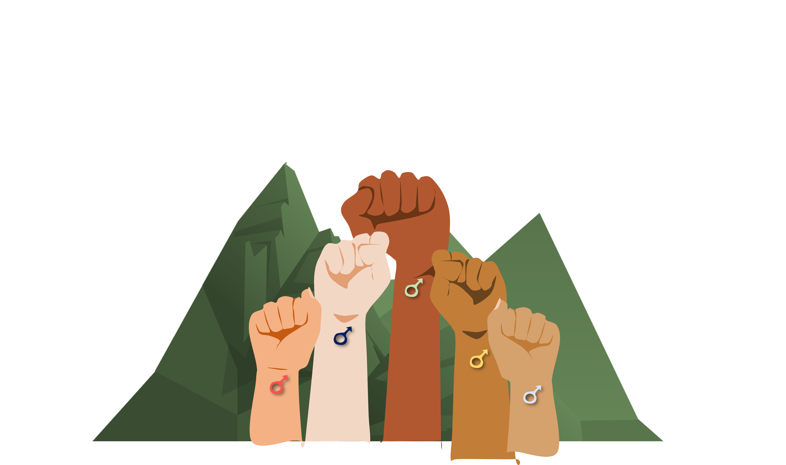
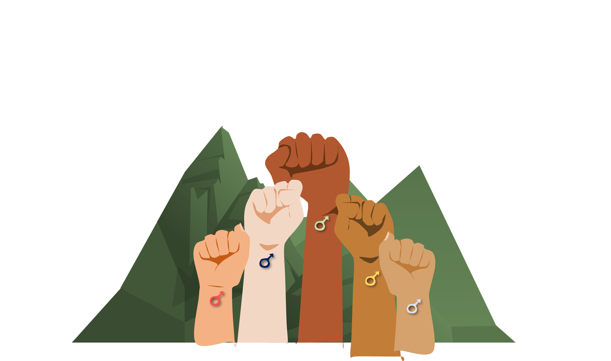

In a patriarchal society, where men dominate and rule our community, violence and abuses against women and girls are rampant.
Undeniably, the masculinity ideology as part of our people's attitude may cause gender-based violence and other practices of gender discrimination.
In these changing times, it is necessary to use the power of men and boys in ending different forms of violence and criminalities.
In the Philippines, the violence against women may be one of the first crimes against a person because of their gender.
Despite of the government initiatives and efforts to stop all forms of violence against women, reported cases of VAW is still increasing.
Likewise, gender-based violence remains pervasive despite of the passage of laws and policies such as RA 9262: (Anti-Violence Against and Women and Children Law),
RA 9710 (Magna Carta of Women), the amended RA 8353 (Anti Rape Law), RA 7877 (Anti-Sexual Harassment Act) and the recent RA 11313 (Safe Spaces Law).
In the 2017 report of the National Demographic Health Survey (NDHS), one (1) in four (4) married women aged 15 to 49 have experienced spousal violence
(this act includes physical, sexual, or emotional violence) by their most recent and or current partners. The report also shows the only one of three women who experience sexual and
physical abuses asked help, the most common source of assistance was not directed to the law enforcing authorities but with victim’s own family (65%) and trusted friends (18%).
In these reported cases, 41% of victims never sought help or even told to anyone. Moreover, 11% of women justified that a husband is beating his spouse for any of these causes:
neglects children, going out without husband's permission, argues with him, burns food, and refusal to have sex